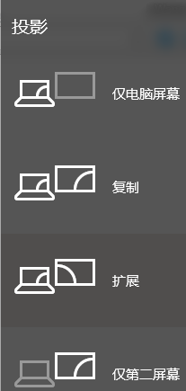
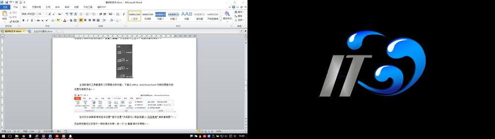
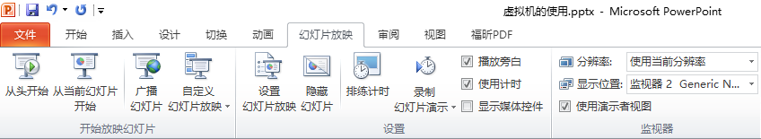
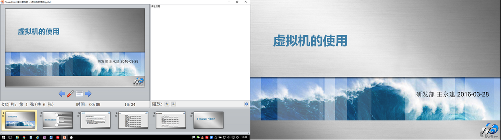

演讲的艺术
原创作者：王永建(blog@wangyongjian.cn)
原文引用地址：blog.wangyongjian.cn
在我们的办公电脑上无一例外的都安装了演示软件，可能是MicroSoft 的PowerPoint、WPS的Office 演示、YOZO Office 演示、也可能是LibreOffice的演示文稿Impres。这些演示都提供了强大的功能，甚至有人可以用来制作动画。但不幸的是，并不是每个人可以很好的应用这个强大的功能，很大演讲者滥用了这些强大的功能，把演讲搞的很糟糕。每一个演讲者应该遵循少就是多的原则来组织规划每一次演讲。通过简单的设计我们的演示文稿，起到强化和突出说服性新的作用，而不是吓到听众，把他们搞的晕头转向、注意力涣散。
每一次演讲并不一次是有感而发的激情表演，而是演讲者经过精心策划和细致的准备的结果，需要通过一些技巧和方法提升我们的水平。 演示文稿大体可以分为现场演示类型和说明性文档类型两大类，本文只讨论本人对现场演示型演示文稿的经验认识及使用感受。
准备工作
每一次演讲之前都应该做足前期的准备工作，理顺演讲搞的逻辑，引用专业适当的专业资料数据，我一般通过以下内容组织内容
1、 演讲的目的
演讲并不是简单的信息传递，不然让听众看一看演示文稿就可以了。演讲前需要我们确定我们的演讲目的，说服听众接受我们的观点；
2、 了解目标听众
尽可能多的了解目标听众，经验水平、知识程度、技术水平、年龄层次、职能职责等，根据听众的属性准备有针对性演讲的内容。不然，再好的演讲文稿，如果目标对象选错了也会使导致一场糟糕的演讲。
3、 规划内容提纲
不管演讲者的演讲技巧有多好，PPT做得多专业，多漂亮，如果演示文稿缺乏实实在在的内容，都不能达到我们预期的目的。准备适合听众的演讲内容将一系列信息有机的串联成一个结构完成、内容清洗简单易懂的故事。不至于让听众听起来感到烦躁。
包含的内容
一个完成的演示文稿应至少包含4张，分别是封页：显示主题和演讲人信息；目录页（演讲提纲）：告诉听众本次演讲的主体内容；内容页（1张或几张，不建议太多）：对演讲内容的阐述；答谢页（最后一页）：对听众的感谢，一句话总结等内容。内容的制作应遵循几个简单的原则；
1.尽量的少用文字、多用图、图表（不是表格）表示，图往往比文字更具有视觉表现力；
2.演示文稿内容的最大作用是提示，并非直接的说明或描述。同时也是演讲内容要点，提示自己不要漏掉了相关内容；
3.用少量的动画来引导听众的注意力，虽然演示工具给我们提供了大量花哨的效果，但毕竟不是让我们放动画的。
演示工具的使用
演讲准备前，很多时候在接上外接投影后自己电脑上的内容在投影画面上一览无余，虽然某些内容我们是并不想展示在大家面前的。很少有人关心连接投影仪的几种模式，在接入投影仪后可以通过Win+P组合键调出选择菜单，可以根据需要选择使用模式。这几种模式区别是：仅电脑屏幕，仅使用电脑屏幕，这相当于关闭了投影仪，投影仪没有显示或者黑屏；复制，将电脑屏幕的内容复制到投影仪上，此时投影内容和电脑屏幕是一样的，注意如果投影仪和电脑屏幕的分辨率不一样时会改变电脑屏幕的分辨率；扩展，投影仪以扩展形式显示，即在电脑屏幕的右侧增加了一个显示屏，两个屏幕可以显示不同的内容，你可以把要显示内容拖到任意屏幕显示，这也是进行演讲时推荐的模式；仅第二屏幕，仅在投影仪上显示，电脑屏幕将黑屏。

选择“扩展”模式后的显示效果就是下面的样子，左边是电脑屏幕，可以任意操作了， 
右侧是投影仪的显示内容，只能显示想展示的信息。好了，可以胡乱操作了，没人能看见你在干嘛。
主流的演示工具都提供了双屏显示的功能，下面以Office 2010 PowerPoint为例双屏显示的设置与使用方法。

在幻灯片放映菜单标签中设置“显示位置”为投影仪，即监视器2，勾选使用“演讲者视图”。
仅此两处就可以实现不一样的演示效果，按一下F5看看演示效果吧。

左边电脑屏幕上显示的信息量要比右侧投影仪上显示的内容丰富太多了，这个就是演讲者看到的画面，大大的空白处就是“备注”的内容。备注里可以添加要演讲要讲演的内容，没有准备或者临场不知所错的时候直接阅读“备注”吧。
通过这个演讲者视图，演讲者不仅可以看见每个页面的预览；还可以知晓下一张PPT的大致内容（标题）；可以很好的控制演讲时间。
推荐两本书，魏斯曼的【说服：全球顶尖企业的商务沟通之道】，里面有很多使用的信息，还有斯图尔特•戴蒙德《沃顿商学院最受欢迎的谈判课》。